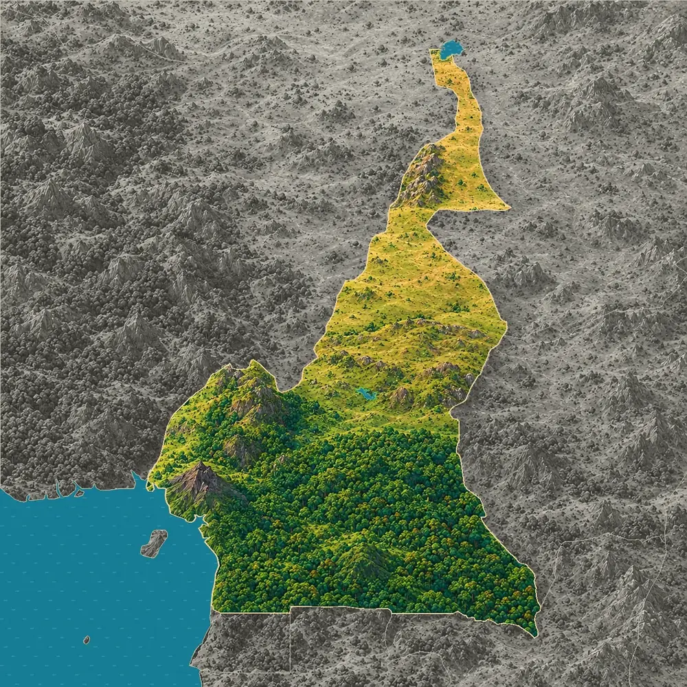
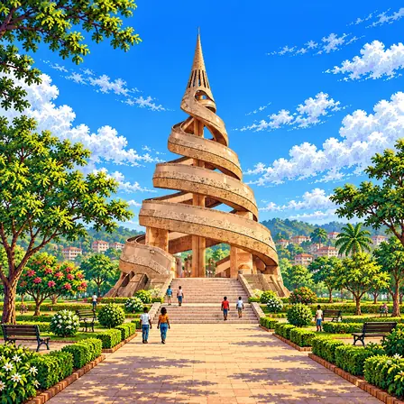
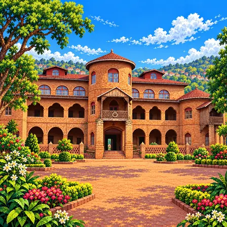
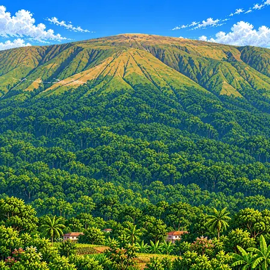
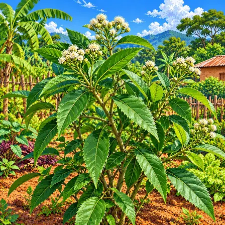
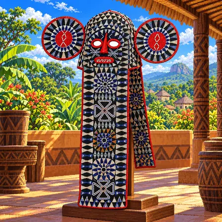
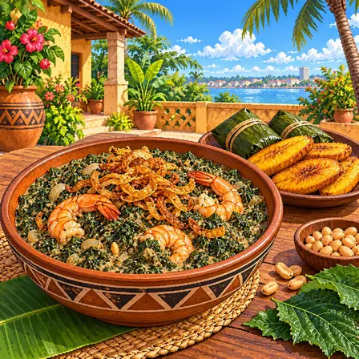
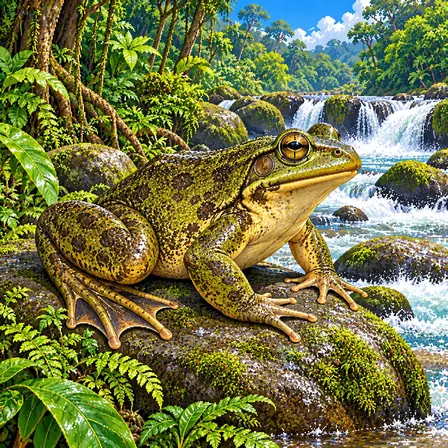
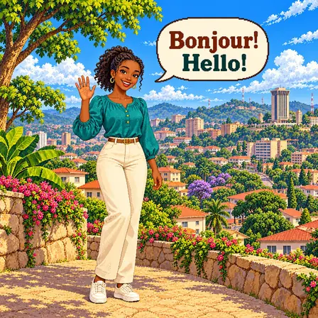
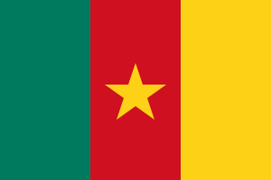

남쪽의 넓은 열대우림
카메룬 남쪽은 아프리카 한가운데로 이어지는 열대우림이 덮고 있어요. 그 가운데 자 동물 보호구역은 넓이가 약 5,260km²이고, 자강이 거의 한 바퀴를 둘러싸 흘러요. 아프리카에서 가장 크고 잘 보호된 열대우림 가운데 하나로 유네스코 세계유산이에요.

카메룬은 남쪽이 빽빽한 열대우림이고, 북쪽으로 갈수록 풀밭과 메마른 땅이 넓어져요. 서쪽 바닷가에는 지금도 불을 뿜는 화산인 카메룬산이 솟아 있어요. 북쪽 끝은 차드호에 닿아 있어요.
카메룬은 남쪽의 열대우림, 가운데의 아다마와 고원, 북쪽의 사바나가 차례로 이어지는 나라예요. 서쪽에는 기니만의 섬에서 북쪽으로 이어지는 화산대를 따라 카메룬산과 높은 산지가 솟아 있어요.
카메룬 남쪽은 아프리카 한가운데로 이어지는 열대우림이 덮고 있어요. 그 가운데 자 동물 보호구역은 넓이가 약 5,260km²이고, 자강이 거의 한 바퀴를 둘러싸 흘러요. 아프리카에서 가장 크고 잘 보호된 열대우림 가운데 하나로 유네스코 세계유산이에요.
남쪽에서 북쪽으로 갈수록 땅이 점점 높아져, 나라 가운데에 해발 750~1,350m의 아다마와 고원이 펼쳐져요. 고원의 북쪽 끝은 나이지리아와의 경계를 따라 이어지는 만다라산맥으로 이어져요.
출처: Encyclopaedia Britannica, Cameroon: Land · Encyclopaedia Britannica, Mandara Mountains
카메룬 북쪽 끝은 차드, 나이지리아, 니제르와 함께 차드호에 닿아 있어요. 차드호는 1963년 넓이가 약 2만 5천km²였지만, 가뭄과 물 사용으로 2001년에는 1,500km²보다 작아졌어요.
출처: UN News, Shrinking Lake Chad could trigger humanitarian disaster, UN agency warns
카메룬산은 기니만 바닷가에서 곧장 솟아올라 높이가 4,000m가 넘어요. 서아프리카와 중앙아프리카에서 가장 높은 산이고, 바다에서 불어오는 습한 바람이 부딪혀 산비탈에 비가 아주 많이 내려요.
출처: Royal Botanic Gardens, Kew, Mount Cameroon National Park (TIPAs factsheet) · Encyclopaedia Britannica, Cameroon: Land
카메룬산은 서아프리카와 중앙아프리카에서 하나뿐인, 지금도 분출하는 화산이에요. 1982년과 1999년에도 산비탈에서 용암이 흘러내렸어요.
출처: Royal Botanic Gardens, Kew, Mount Cameroon National Park (TIPAs factsheet) · WWF, Western Africa: Coastal Cameroon and Equatorial Guinea
카메룬 서쪽의 높은 산지는 기니만의 비오코섬에서 북쪽으로 이어지는 화산대를 따라 생겼어요. 땅이 갈라진 틈을 따라 마그마가 올라와 카메룬산과 서쪽 고원의 화산들을 만들었어요.
카메룬에서 잘 알려진 도시, 역사유산, 자연, 식물, 문화, 음식, 동물, 인사말, 국기를 한 장씩 그렸어요.

야운데는 카메룬의 수도예요. 언덕이 많아 '일곱 언덕의 도시'라고 불려요. 나선 모양으로 감아 올라가는 기념탑이 도시를 대표해요.
야운데는 카메룬 남쪽 가운데의 높은 땅, 해발 약 750m에 자리 잡은 카메룬의 수도예요. 여러 언덕 위와 그 사이 골짜기에 도시가 펼쳐져 있어 '일곱 언덕의 도시'라고 불려요. 1960년 카메룬이 독립하면서 수도가 됐어요. 도시 한가운데 언덕에는 두 갈래 나선이 감아 올라가는 모양의 재통일 기념탑이 1970년대에 세워져, 야운데를 대표하는 건축물이 됐어요. 약 380만 명이 사는 카메룬에서 둘째로 큰 도시이고, 가장 큰 도시는 바닷가 항구 두알라예요.

품반 왕궁은 바뭄 왕국의 왕이 사는 궁전이에요. 1917년에 지었고 안에 박물관이 있어요. 이 왕국의 왕은 글자를 직접 만들었어요.
품반 왕궁은 카메룬 서부 고원의 도시 품반에 있는 바뭄 왕국의 궁전이에요. 1917년 바뭄의 왕 이브라힘 은조야가 지었고, 벽돌을 쌓아 올린 2층 건물에 아치 모양 창과 긴 회랑, 높은 탑이 있어요. 은조야 왕은 19세기 말 바뭄어를 적는 글자를 직접 만들었고, 그 글자로 왕국의 역사와 법, 약에 관한 책을 쓰게 했어요. 왕궁은 지금도 바뭄의 왕이 사는 곳이며, 14세기 말부터 이어진 왕조의 옷과 조각, 악기를 보여 주는 박물관이 함께 있어요. 바뭄 사람들은 지금도 왕궁 앞 광장에서 전통 행사를 열어요.

카메룬산은 서·중앙아프리카에서 가장 높은 산이에요. 지금도 활동하는 화산이에요. 산기슭은 세계에서 비가 가장 많이 오는 곳 가운데 하나예요.
카메룬산은 카메룬 남서쪽 바닷가에서 곧장 솟아오른, 서아프리카와 중앙아프리카에서 가장 높은 산이에요. 땅속 마그마가 땅이 갈라진 틈을 따라 솟아올라 용암과 화산재가 거듭 쌓여 만들어진 화산으로, 높이는 약 4,095m예요. 지금도 활동하는 화산이어서 1999년에도 산비탈에서 용암이 흘러내렸어요. 바다에서 불어오는 습한 바람이 산에 부딪혀 비를 많이 내리게 해서, 서쪽 기슭의 데분차는 일 년에 약 10m의 비가 내리는 세계에서 가장 비가 많은 곳 가운데 하나예요. 산기슭부터 열대우림, 산지 숲, 풀밭이 차례로 나타나고, 카메룬산 국립공원으로 보호받아요.

쓴잎은 잎을 씹으면 아주 쓴맛이 나는 나무예요. 잎을 여러 번 씻고 삶아 쓴맛을 줄여 먹어요. 카메룬 요리 은돌레에 들어가요.
쓴잎은 카메룬 마을의 밭과 집 둘레에서 흔히 기르는 국화과의 떨기나무예요. 높이 2~5m로 자라고, 짙은 초록 잎은 끝이 뾰족한 긴 타원형이며 씹으면 아주 써서 '쓴잎(비터리프)'이라는 이름이 붙었어요. 가지 끝에 작은 흰 꽃이 모여 피고, 가지를 잘라 꽂아 두기만 해도 뿌리를 내려 쉽게 자라요. 잎을 여러 번 씻고 삶아 쓴맛을 줄인 뒤 채소로 먹는데, 카메룬의 이름난 요리 은돌레의 주재료예요. 서아프리카와 중앙아프리카 여러 나라에서 채소와 전통 약초로 오랫동안 써 왔어요.

코끼리 구슬 가면은 알록달록한 유리구슬로 덮은 가면이에요. 길게 늘어진 판은 코끼리 코, 둥근 판은 귀예요. 의식 때 이 가면을 쓰고 북소리에 맞춰 춤을 춰요.
코끼리 구슬 가면은 카메룬 서부 고원(그래스필즈)의 바밀레케 사람들이 쓰는 가면이에요. 천에 수많은 유리구슬을 꿰매 붙였는데, 앞뒤로 길게 늘어진 판은 코끼리 코를, 양옆의 둥근 판은 귀를 나타내요. 구슬은 멀리서 들여오던 귀한 물건이어서, 구슬을 많이 붙인 가면일수록 쓰는 사람의 높은 지위를 보여 줬어요. 왕의 친척과 이름난 사람들이 모인 '쿠오시' 모임이 큰 의식과 장례 때 이 가면을 쓰고 북과 징 소리에 맞춰 천천히 춤을 춰요. 춤을 추면 둥근 귀가 펄럭여 코끼리가 움직이는 것처럼 보여요.

은돌레는 쓴잎과 땅콩을 함께 끓인 카메룬 요리예요. 고기나 새우를 넣어 맛을 더해요. 플랜틴이나 밥을 곁들여 먹어요.
은돌레는 쓴잎을 땅콩 소스에 넣고 끓인 카메룬의 이름난 요리예요. 쓴잎을 여러 번 씻고 삶아 쓴맛을 줄인 다음, 삶아서 곱게 간 땅콩과 양파, 마늘을 함께 끓여 걸쭉하게 만들어요. 소고기나 생선, 새우를 넣어 맛을 더하고, 마지막에 기름에 볶은 양파와 새우를 위에 얹기도 해요. 바닷가 도시 두알라의 사와 사람들 음식에서 시작됐다고 알려져 있고, 지금은 카메룬 어디서나 잔칫날 즐겨 먹어요. 카사바를 발효해 찐 '보볼로'나 플랜틴, 밥을 곁들여 먹어요.

골리앗개구리는 세계에서 가장 큰 개구리예요. 몸무게가 3kg이 넘기도 해 고양이만 해요. 강가의 돌을 옮겨 둥근 웅덩이 둥지를 만들어요.
골리앗개구리는 카메룬 남서부와 적도기니의 물살 빠른 강과 폭포 둘레에만 사는 세계에서 가장 큰 개구리예요. 몸길이가 최대 약 32cm, 몸무게는 3kg이 넘을 수 있어서 고양이만 해요. 물살이 센 강의 바위 위에서 지내며 곤충과 가재, 작은 물고기, 다른 개구리를 잡아먹어요. 강가의 돌을 밀어 옮겨 지름 1m가 넘는 둥근 웅덩이 둥지를 만들고, 그 안에 알을 낳아요. 숲이 줄고 사람들에게 많이 잡혀 수가 크게 줄어서 멸종 위기종으로 보호받아요.

카메룬 사람들은 프랑스어로 '봉주르', 영어로 '헬로'라고 인사해요. 두 말을 모두 공식 언어로 써요. 그 밖에도 250개가 넘는 말이 있어요.
카메룬은 프랑스어와 영어를 함께 공식 언어로 쓰는 나라라서, 프랑스어 '봉주르(Bonjour)'와 영어 '헬로(Hello)'로 모두 인사해요. 프랑스어는 나라 대부분 지역에서, 영어는 서쪽의 두 지역에서 주로 써요. 헌법에 두 언어가 같은 지위를 가진다고 적혀 있어서, 지폐와 나라의 문서에 두 언어가 함께 쓰여 있어요. 카메룬에는 이 밖에도 250개가 넘는 토박이말이 있어요. 시장이나 거리에서는 영어를 바탕으로 생긴 카메룬 피진 영어도 자주 들려요.

카메룬 국기는 초록, 빨강, 노랑 세 칸이 세로로 놓여 있어요. 가운데 빨간 칸에 노란 별이 하나 있어요. 별은 나라가 하나라는 뜻이에요.
카메룬 국기는 왼쪽부터 초록, 빨강, 노랑 세 칸이 세로로 놓이고, 가운데 빨간 칸에 노란 별 하나가 있어요. 1957년에 세 색 깃발이 처음 정해졌고, 1961년부터 별 두 개를 넣었다가 1975년 5월 20일 별을 하나로 바꿨어요. 하나뿐인 별은 나라의 하나 됨을 나타낸다고 설명돼요. 카메룬 헌법은 국기를 초록, 빨강, 노랑 세로 세 칸과 가운데의 노란 별로 정하고 있어요. 가로와 세로 비율은 3:2예요.